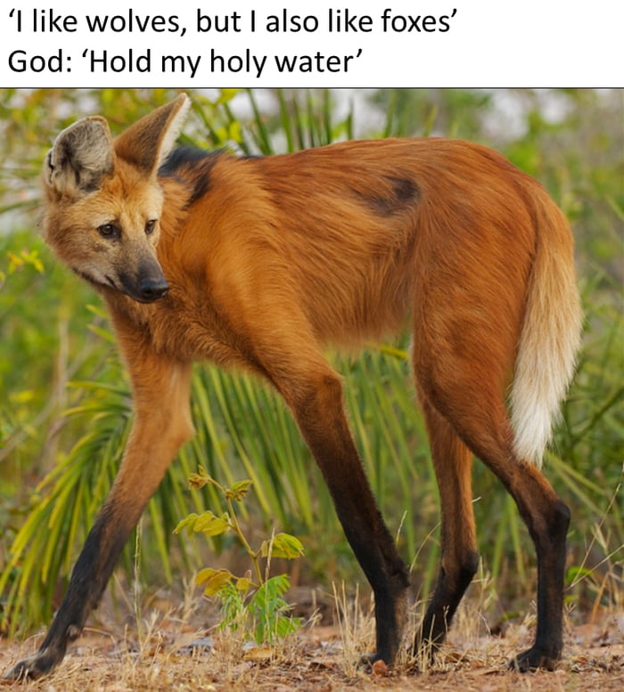
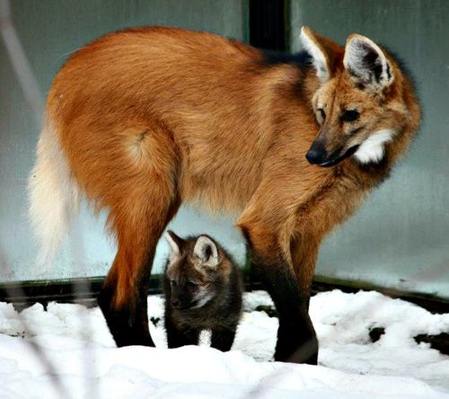
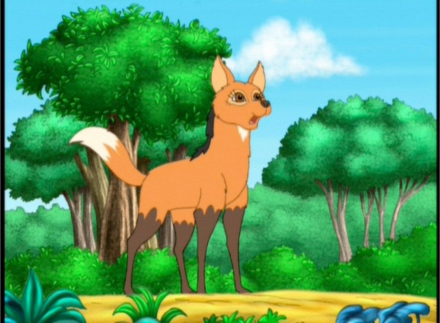
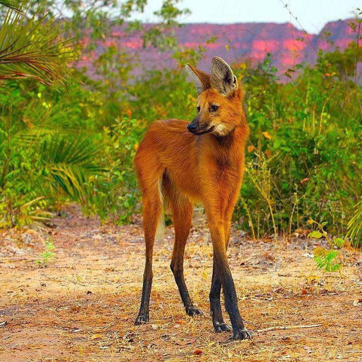
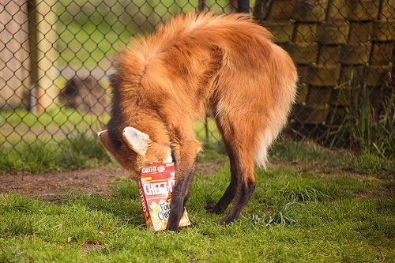

The Maned Wolf - Chrysocyon brachyurus
Wolf or Fox?
A Maned Wolf's Life
Living in the high grass fields of the savanna, the maned wolf roams with lanky black legs, standing usually at the average height of 3 ft. These creatures, often mistaken as a fox, albeit named a wolf, being neither, eat mainly small animals as prey and vegetation. They inhabit central and eastern South America including northern Argentina, South and Central Brazil, Paraguay, Bolivia and southern Peru.
The destruction of their habitats are the main focus of their endangerment. Along with this, often cars speeding can lead to their deaths as well, along with being killed for religious beliefs, their body parts are believed to possess magical properties. Domestic dogs owned as pets can attack and pass on diseases to this species as well. However, institutions are aiming to provide sanctuary for these beautiful and rare creatures.
    